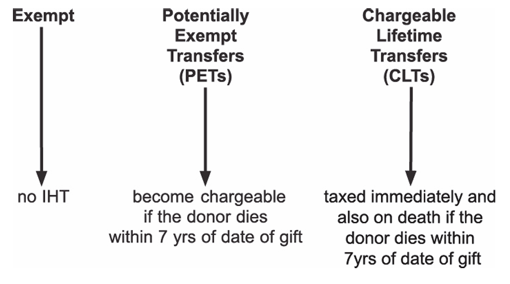
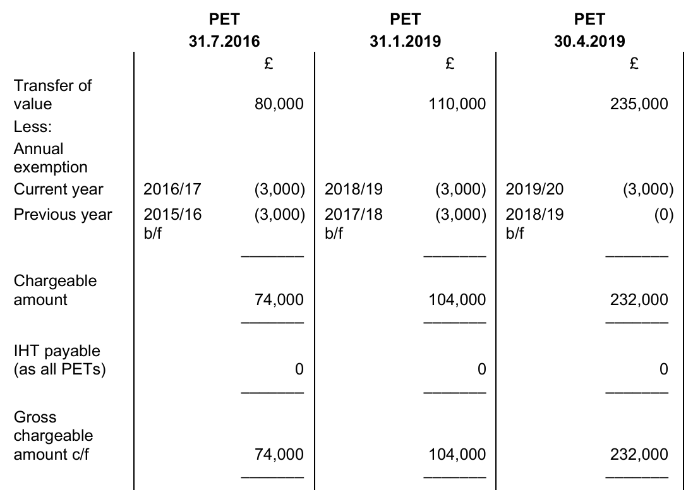
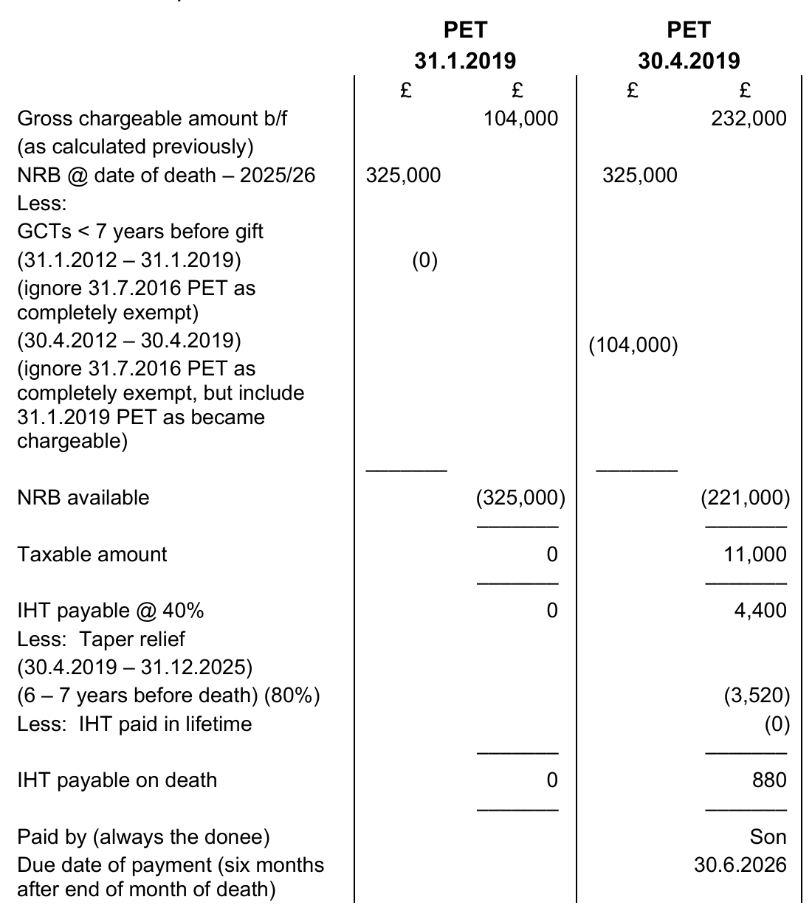
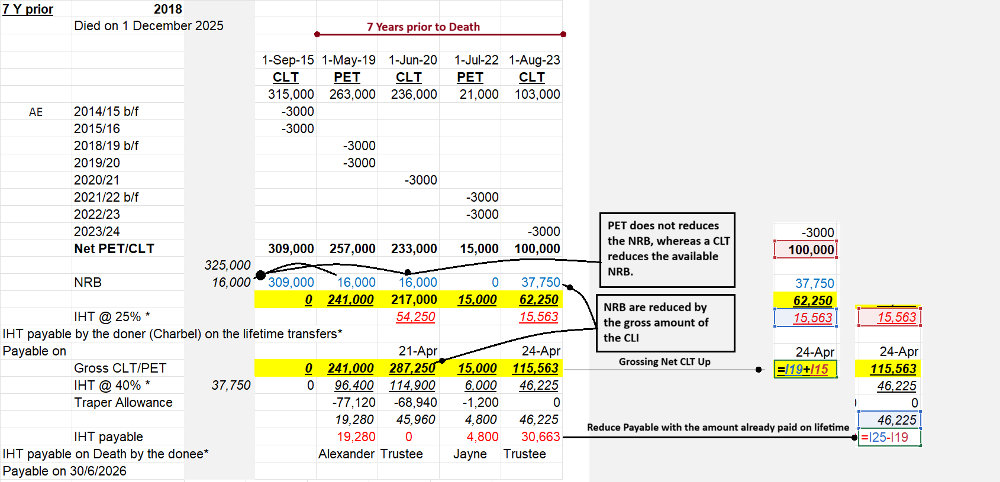

Chapter 22: Inheritance tax
- identify the persons chargeable.
- understand and apply the meaning of transfer of value, chargeable transfer and potentially exempt transfer.
- demonstrate the diminution in value principle.
- demonstrate the seven year accumulation principle taking into account changes in the level of the nil rate band.
- understand the tax implications of lifetime transfers and compute the relevant liabilities.
- understand and compute the tax liability on a death estate.
- understand and apply the transfer of any unused nil rate band between spouses and civil partners.
- understand and apply the residence nil rate band available when a residential property is inherited by direct descendants.
- understand and apply the following exemptions: small gifts exemption; annual exemption; normal expenditure out of income; gifts in consideration of marriage; gifts between spouses and civil partners.
- understand basic inheritance tax planning.
- identify who is responsible for the payment of inheritance tax and the due date for payment of inheritance tax.
Most inheritance tax (IHT) is collected on the death of an individual based on the value of the individual’s death estate. However, if IHT only applied on death, it would be an easy tax to avoid by giving away assets immediately before death. Therefore, there are IHT implications arising on some lifetime gifts as well as on death.
The charge to inheritance tax (IHT)
Inheritance tax is charged on:
- a transfer of value
- of chargeable property
- by a chargeable person.
A charge to inheritance tax (IHT) arises:
- on the death of an individual
- on lifetime gifts to individuals when the donor dies within seven years of the date of a gift
- on lifetime gifts into trusts which are taxed at the date of the gift.
The donor is the person who makes the transfer of the asset, and the recipient is known as the donee.
Transfer of value
A transfer of value is a gift of any asset which results in a reduction in the value of the donor’s estate.
To be treated as a transfer of value the transfer must be a ‘gratuitous disposition’. This basically means a gift.
A bad business deal will therefore not be liable to inheritance tax, even though there is a fall in value of the estate, as it was not the donor’s intention to give anything away.
To calculate the transfer of value for IHT purposes, the loss to donor principle is used (also referred to as the diminution in value concept).
The loss to the donor is the difference between the value of the donor’s estate before and after the gift, and is the starting point for lifetime IHT calculations:
| £ | |
|---|---|
| Value of estate before gift | X |
| Less: Value of estate after gift | (X) |
| Diminution in value or transfer of value | X |
The loss to the donor is usually the open market value of the asset gifted.
However, in some circumstances the transfer of value, from the donor’s point of view is not the same as the value of the asset received, from the donee’s point of view.
This is most common with unquoted shares, where a controlling shareholding (from which a partial gift can be made, reducing the donor’s level of control) has a higher value per share than the minority shareholding which the donee acquires by the gift.
Example 1: IHT
Linda owns 6,000 shares, which represents a 60% holding, in Loot Ltd.
On 31 December 2025 she gave a 20% holding in the company to her friend, Bob.
The values of shareholdings in Loot Ltd on 31 December 2025 have been agreed for IHT purposes as follows:
| Holding | Value per share |
|---|---|
| Up to 25% | £9 |
| 26% to 50% | £15 |
| 51% to 74% | £26 |
| 75% or more | £45 |
Calculate Linda’s transfer of value relating to the gift of unquoted shares for IHT purposes.
Solution
Property
Chargeable property
All property to which a person is beneficially entitled is deemed to form part of an individual’s estate. Therefore, a gift of any asset is a transfer of value.
For the purposes of the TX examination there is no such thing as an exempt asset for IHT purposes, but there are exempt transfers.
Chargeable persons
A chargeable person for the purposes of the TX examination will always be an individual.
All individuals are potentially liable to IHT.
An individual who is long-term resident in the UK is liable to inheritance tax on worldwide assets.
If not long-term UK resident, an individual is generally liable on UK assets only.
However, for the purposes of the TX examination, all individuals will be long-term UK resident.
Note that spouses, or partners in a registered civil partnership, are treated as separate chargeable persons.
Occasions of charge
The main charge to IHT arises on the death of an individual as liability arises on the following:
- the value of all the net assets in the individual’s estate at the date of death.
- any lifetime gifts made in the seven years before death, provided they are not exempt transfers. However, an IHT charge also arises on certain lifetime gifts at the date of the gift.
Lifetime gifts
There are three categories of lifetime gifts that can be made by an individual and they are treated for IHT purposes as follows:

Types of lifetime gifts
| Exempt transfers | Potentially Exempt Transfers (PETs) | Chargeable lifetime transfers (CLTs) |
|---|---|---|
| Definition | ||
| A gift or transfer that is specifically deemed to be exempt from IHT (covered later) | A gift by an individual to another individual | No definition = residual category (i.e. a gift which is not exempt nor a PET). For the TX examination, a CLT will be a gift into a trust. |
| During lifetime | ||
| No IHT payable | No IHT payable | IHT calculated using the lifetime rates of tax |
| If Donor lives seven years | ||
| No IHT payable | No IHT payable | No further IHT payable |
| Gift becomes exempt | ||
| If Donor dies within seven years | ||
| No IHT payable | The PET becomes chargeable on death for the first time | Possibly extra IHT, calculated using the death rates of tax |
It is important to note that in practice, the majority of lifetime transfers made by individuals are either:
- exempt transfers, or
- transfers from one individual to another (i.e. a PET).
Making gifts into trusts is a complicated area in practice, but for the TX examination, all gifts into trusts will be treated as CLTs.
Chargeable lifetime transfers (CLTs)
A CLT is a gift that is not exempt and not a PET. They are not common in practice, but appear in examination questions because they are chargeable to IHT at the time of the gift.
In the TX examination, CLTs will always be a lifetime transfer by an individual into a trust.
Trusts
A trust is an arrangement where property (known as the trust assets or settled property) is transferred by a person (known as the settlor) to the trustees, to be held for the benefit of one or more specified persons (known as the beneficiaries) on terms specified in the trust deed.
The most common example of a trust is where parents wish to give assets to their children, but not until they are adults. The parents therefore put the assets into a trust with the children as beneficiaries, and the assets are controlled by the trustees until the children reach a specified age.
It is not necessary to understand the workings of trusts for the TX examination, only to learn that gifts into trusts are CLTs.
Potentially exempt transfers (PETs)
PETs have derived their name from the fact that if the donor lives for seven years after making the gift, then the transfer is exempt (i.e. free from IHT). Therefore, at the time of transfer, it has the potential to be exempt.
However, if the donor dies within seven years of making the gift, then IHT may become chargeable on the gift.
Note that transfers on death can never be PETs.
Exempt transfers and reliefs for IHT
The following table summarises the exempt transfers and reliefs available for IHT that are examinable in TX.
🎁 Lifetime gifts only
| Relief | Summary |
|---|---|
| Small gifts exemption | Gifts of up to £250 per donee per tax year are exempt |
| Marriage exemption | Gifts on marriage: £5,000 (parent), £2,500 (grandparent), £1,000 (others) |
| Normal expenditure out of income | Gifts from regular income, provided they do not affect standard of living |
| Annual exemption | £3,000 per tax year; can be carried forward one year |
⚖️ Lifetime gifts and death estate
| Relief | Summary |
|---|---|
| Inter‑spouse exemption | Transfers between spouses/civil partners are completely exempt (UK domiciled) |
| • If non‑UK domiciled, exemption limited to £325,000 |
Exemptions available for lifetime gifts only
The following exemptions are available to reduce lifetime transfers only. They do not apply to the death estate.
Note that the rules and limits for these exemptions are not included in the tax rates and allowances provided to you in the examination.
Small gifts exemption
Lifetime gifts are exempt if they are:
- an outright gift to an individual of no more than £250
- per recipient
- per tax year.
The small gift exemption does not apply if the gift is more than £250.
Therefore, a gift of £300 does not qualify. Similarly, if an individual makes a gift of £240 to a person followed by another gift of £100 to the same person in the same tax year, neither gift is exempt.
However, the donor can make gifts of up to £250 to any number of different recipients and they will all be exempt.
Marriage exemption
A lifetime transfer made ‘in consideration of a marriage’ (or the registration of a civil partnership) is exempt up to the following maximum limits:
- £5,000 by a parent
- £2,500 by a grandparent or remoter ancestor
- £2,500 by a party to the marriage or civil partnership (e.g. from the groom to the bride)
- £1,000 by anyone else.
The exemption is conditional on the marriage taking place.
Normal expenditure out of income
IHT is levied on transfers of capital wealth.
Therefore, a lifetime transfer is exempt if it can be shown that the gift:
- is made as part of a person’s normal expenditure out of their income, and
- does not affect the donor’s standard of living.
To be treated as ‘normal’, gifts must be habitual (i.e. there is a regular pattern of giving). For example, payment of school fees for a grandchild or annual payments into a life insurance policy for the benefit of a child are usually exempted under this rule.
The annual exemption
The annual exemption (AE) is an exemption available against lifetime transfers and operates as follows:
The AE: exempts the first £3,000 of lifetime transfers in any one tax year is applied chronologically to the first gift in the tax year, then (if there is any left) the second gift and so on must be applied to the first gift each year, even if the first gift is a PET and never becomes chargeable.
Any unused AE: may be carried forward to the next year however, it can be carried forward for one year only, and can only be used after the current year’s AE.
- The maximum AE in any one year is therefore £6,000 (£3,000 × 2).
- If other exemptions are available, they are given before the AE.
Example 2: Lifetime gifts
Meron made the following lifetime gifts: (a) 31 August 2023, £600, to her son
(b) 31 October 2023, £800, to a trust
(c) 31 May 2024, £2,100, to a trust
(d) 30 November 2024, £1,100, to a trust
(e) 30 April 2025, £5,000, to her daughter.
Calculate the chargeable amount after AEs for each of the gifts.
Solution
Exemptions available for lifetime transfers and the death estate
Inter-spouse exemption
Transfers between spouses, or between partners in a registered civil partnership, are exempt:
- regardless of the value of the transfer, and
- whether made during the donor’s lifetime or upon the donor’s death.
Example 3: Lifetime gifts
Felipe made the following lifetime transfers:
- Unquoted shares worth £525,000 in the family company to his husband on 1 June 2025.
- £15,000 to his son on 6 July 2025 as a wedding present.
- £20,000 to his nephew on 27 September 2025.
- £235 to a friend for her 40th birthday on 4 November 2025.
- £270,000 into a trust on 24 December 2025.
Calculate the chargeable amount for each of Felipe’s lifetime gifts.
Solution
IHT payable during an individual’s lifetime on CLTs
Lifetime IHT is payable when an individual makes a gift into a trust.
The procedure to calculate the lifetime IHT on a CLT The chargeable amount for each lifetime gift (PETs and CLTs) is calculated on each gift separately, in chronological order.
Even though there is no lifetime tax on a PET, it is necessary to calculate its chargeable value as a PET uses the annual exemptions, even if it never becomes chargeable. A PET may therefore reduce the amount of the annual exemptions available to a CLT.
1. Calculate the chargeable amount of each CLT and PET:
| £ | |
|---|---|
| Value of estate before transfer | X |
| Less: Value of estate after transfer | (X) |
| Transfer of value | X |
| Less: | |
| 1. Wholly exempt transfers (i.e. to spouse/civil partner) | (X) |
| 2. Specific lifetime exemptions: | |
| – e.g. Marriage exemption | (X) |
| – Annual exemptions (applied last) | (X) |
| Chargeable amount | X |
For a CLT (i.e. a transfer into a trust), the only exemption that is likely to be applicable is the annual exemption.
For a CLT, calculate the amount of nil rate band available after allowing for any gross chargeable transfers in the previous seven years (covered below).
Calculate the tax on the excess at either 20% or 25% depending on who has agreed to pay the tax; the donor or the donee (covered below).
Calculate the gross chargeable amount of the gift to carry forward for future computations.
If required by the examination question, state the due date of payment of the IHT (covered later).
The nil rate band
All individuals are entitled to a nil rate band (NRB) and are taxed on the chargeable value of CLTs in excess of the NRB at different rates, depending on who has agreed to pay the lifetime tax.
The NRB had steadily increased each tax year in the past, although it has remained the same since the tax year 2009/10.
For lifetime tax calculations, the NRB applicable at the time of the gift is used. The current NRB of £325,000 is included in the tax rates and allowances provided to you in the examination.
In the TX examination, you should assume that the NRB for previous years is £325,000, unless the question states otherwise.
The appropriate rate of tax
The appropriate rate of tax to apply to lifetime gifts (after the deduction of the available NRB) depends on who has agreed to pay the tax due.
Donee pays the tax
If the trustees of the trust (which is the donee of the gift) agree to pay the tax:
- the gift is referred to as a gross gift, and
- the appropriate rate of tax is 20%.
Donor pays the tax
If the donor agrees to pay the tax:
The gift is referred to as a net gift.
As a result of the gift, the donor’s estate is reduced by:
- the value of the gift, and
- the associated tax payable on the gift.
Therefore, the amount of the gift needs to be ‘grossed up’ to include the tax that the donor has to pay.
The appropriate rate of tax is therefore 25% (i.e. 20/80ths of the net gift).
The gross chargeable transfer (GCT) value to carry forward is the net chargeable amount (the net gift) plus any lifetime IHT paid by the donor.
This GCT amount remains the same, even if the NRB available at death differs from the NRB that was available on this gift in the donor’s lifetime.
In summary, the rate of tax on the value of CLTs in excess of the NRB is:
| Payer | Appropriate rate | |
|---|---|---|
| Trustees of the trust | Gross gift | 20% |
| Donor | Net gift | 25% (or 20/80) |
Note that the tax due on a CLT is primarily the responsibility of the donor.
Therefore, where an examination question does not specify who has agreed to pay the tax always assume that the donor will pay and that the gift is therefore a net gift, and IHT is calculated at 25%.
Note that the 25% tax rate is not included in the tax rates and allowances provided in the examination and therefore must be learnt.
The normal due date of payment of lifetime IHT The date of payment of lifetime IHT depends on the date of the gift:
| Date of CLT | Due date of payment |
|---|---|
| 6 April to 30 September | 30 April in the following year |
| 1 October to 5 April | Six months after the end of the month of the CLT |
Example 4: Due date of CLTs
Kendall makes a gift into a trust on 13 June 2025 of £366,000. They have made no previous lifetime gifts.
Calculate the amount of lifetime IHT due on the gift into the trust and state the gross chargeable amount of the gift to carry forward for future computations, assuming:
- the trustees of the trust have agreed to pay any IHT due.
- Kendall has agreed to pay any IHT due.
State the due date for payment of tax in both cases.
Solution
The seven year cumulation period
In Example 4, the individual had made no previous lifetime gifts and therefore all of the NRB was available to calculate the tax. However, the NRB is available for a ‘seven year cumulation period’.
Each time a CLT is made, in order to calculate the IHT liability, it is necessary to look back seven years and calculate how much NRB is available to set against that particular gift.
For lifetime calculations, to calculate the NRB available at any point in time, it is necessary to take account of the total of the gross amounts of all other CLTs made within the previous seven years.
- These CLTs in the seven year cumulation period are deemed to have utilised the NRB first.
- There will therefore only be NRB available to match against this latest gift, if the total of the CLTs in the previous seven years is less than the current NRB at the time of the gift.
- Note that although PETs may use the AE during the donor’s lifetime, they do not affect the NRB available to a CLT, as they are not yet chargeable.
Example 5: CLTs IHT arising and due date
During his lifetime Alex had made the following gifts:
- 30 June 2015, £170,000 to a trust
- 13 June 2019, £150,000 to his daughter
- 30 June 2020, £191,000 to a trust
- 15 December 2025, £256,000 to a trust
The trustees of the first two trusts paid the IHT liabilities. Alex paid the tax on the last gift.
Calculate the IHT arising as a result of Alex’s lifetime transfers.
State who will pay the tax, the due date for payment and the gross chargeable amount of each gift to carry forward to future computations.
Solution
Example 6: Lifetime transfers
During his lifetime Yuuma had made the following cash gifts:
- 21 April 2013, £98,000 to a trust (trustees to pay tax)
- 15 April 2019, £140,000 to his son
- 19 March 2020, £234,000 to a trust (Yuuma to pay tax)
- 9 May 2025, £395,000 to a trust (trustees to pay tax)
Calculate the IHT arising as a result of Yuuma’s lifetime transfers.
Solution
Summary of lifetime calculations
Remember to:
- only calculate IHT on CLTs.
- consider the IHT position for each CLT separately and in chronological order.
- use the NRB applicable for the tax year of the gift.
- tax is due at 20% if the trustees pay, and 25% if the donor pays.
Also, remember that PETs are not chargeable at this stage, but you need to calculate the chargeable amount of the PETs as they may use the annual exemptions.
IHT payable on lifetime gifts as a result of death.
On the death of an individual, an IHT charge could arise in relation to lifetime gifts within seven years of death as follows:
- PETs become chargeable for the first time.
- Additional tax may be due on a CLT.
The IHT payable on lifetime gifts as a result of death is always paid by the recipient of the gift:
| Type of gift | Paid by |
|---|---|
| CLT | Trustees of the trust |
| PET | Donee |
Calculating the death IHT on lifetime gifts
The death tax is calculated on each gift separately, in chronological order, as follows:
Identify all gifts within seven years of death.
Calculate the gross chargeable amount of each gift, and also any lifetime tax paid (for CLTs only).
Calculate the amount of NRB available for each lifetime gift that is taxed on death, after deducting all gross chargeable transfers in the seven years before that lifetime gift:
- use the NRB for the tax year of death (rather than the NRB for the tax year of the gift)
- include PETs that have become chargeable due to the donor’s death, but not PETs that are now exempt (gifted more than seven years pre-death).
Calculate the death tax at 40% on each GCT less the available NRB.
Calculate and deduct any taper relief on each GCT (covered later).
For CLTs, deduct any lifetime IHT paid.
If required by the question, state who will pay the tax and the due date of payment (covered later).
Further points regarding death tax calculations on lifetime gifts
Chargeable amount
- The gross chargeable amount of each gift is taxed on death.
- The gross amount of CLTs will have already been calculated in the lifetime IHT calculations.
Remember to use the grossed up value of any CLT where the tax was paid by the donor.
- The chargeable amount of a PET is calculated using the value at the time of the gift and PETs may use up AEs, even though a PET only becomes chargeable on death if the donor dies within seven years.
The nil rate band
- The NRB for the tax year of the gift is used when doing the lifetime tax calculations on a CLT, as covered in the earlier illustrations.
- The NRB for the tax year of death is used to calculate the death tax but it is matched against all chargeable gifts in the seven years prior to the date of the gift (i.e. CLTs and also PETs that have become chargeable) in chronological order.
The seven year cumulation period
The seven year cumulation period for the NRB on death applies in a similar way as for the lifetime gifts NRB calculations.
However, note that:
it is necessary to take into account the total of the gross amounts of all chargeable gifts made within the previous seven years (not just CLTs)
therefore, to calculate the death IHT on each gift, it is necessary to look back seven years from the date of each gift and include the gross amount of:
- all CLTs, and
- any PETs that have now become chargeable due to the death of the individual.
- all CLTs, and
This means that when calculating death tax, a CLT made more than seven years before death may still affect the NRB available for a subsequent lifetime gift that falls within seven years of death.
However, ignore any PETs made more than seven years before death, as they are not taxable and do not use any NRB.
The death rate of tax The death rate of IHT is 40% on the excess over the available NRB.
Taper relief
Where IHT is chargeable on any lifetime transfer due to death within seven years, the amount of IHT payable on death is reduced by taper relief:
where more than 3 years have elapsed since the date of the gift
by a percentage reduction according to the length of time between
- the date of the gift, and
- the date of the donor’s death.
Note that this relief applies to both CLTs and PETs.
The rates of taper relief are included in the tax rates and allowances provided to you in the examination, and are as follows:
So, for a chargeable transfer made more than 5 years but less than 6 years before death, the IHT due on death is calculated as normal and then 60% taper relief is applied such that only 40% of the death tax is payable.
For gifts made seven or more years before death there is no IHT payable on death, so taper relief is not relevant.
Deduction of lifetime IHT paid
For CLTs, any lifetime IHT already paid is deducted from the liability calculated on death.
However, no refund is made if the lifetime tax already paid is higher than the amount now due on death.
At best, the deduction of lifetime tax paid will bring the liability on death down to £Nil.
The normal due date of payment of IHT on death
IHT as a result of death is due six months after the end of the month of death.
Example 7: Death tax payable on lifetime gifts
Fred had made the following lifetime transfers:
- 31 July 2016, £80,000, to his son
- 31 January 2019, £110,000, to his daughter
- 30 April 2019, £235,000, to his son.
He died on 31 December 2025.
Calculate the IHT arising as a result of Fred’s death on 31 December 2025. State who will pay the tax and the due date of payment.
Solution
PET – 31 July 2016
- The PET made on 31 July 2016 to his son is more than seven years before 31 December 2025.
- It is therefore completely exempt. No IHT is payable during his lifetime and no IHT is due as a result of his death.
- The gift is ignored and is not accumulated for future calculations.
PETs – 31 January 2019 and 30 April 2019
The two gifts on 31 January 2019 and 30 April 2019 are PETs. Therefore no lifetime IHT is payable. However, both gifts will become chargeable as a result of Fred’s death within seven years.
IHT payable during lifetime

All gifts are PETs, therefore there is no lifetime tax to pay. However the gross chargeable amount of the PETs must be established at the time of the gift.
IHT payable on death
Date of death: 31 December 2025
Seven years before: 31 December 2018

inheritance tax nil-rate band (NRB) can be used against a potentially exempt transfer (PET), but only if the gift becomes a “failed PET” because the donor dies within seven years of making it.
Example 8: Death tax payable on lifetime gifts
On 15 July 2018 Saanvi made a transfer of £365,000 into a trust. She had made no other lifetime transfers. The IHT due in respect of this gift was paid by Saanvi.
Saanvi died on 30 May 2025. —> 7 Y prior May 2018
Calculate the IHT arising on Saanvi’s lifetime gift, and the additional IHT arising as a result of her death.
State who will pay the tax and the due date of payment.
Solution
Lifetime IHT
15 July 2018 – CLT (2018/19)
| £ | |
|---|---|
| Transfer of value | 365,000 |
| Less: AE – 2018/19 | (3,000) |
| Less: AE – 2017/18 b/f | (3,000) |
| Net chargeable amount | 359,000 |
| NRB at date of gift (2018/19) -> 2024.25 | 325,000 |
| Less: GCTs in 7 years pre-gift (15.7.11 to 15.7.18) | 0 |
| NRB available | (325,000) |
| Taxable amount | 34,000 |
| Lifetime IHT due (£34,000 × 25%) | 8,500 |
| (= net gift as Saanvi paying the tax) | |
| Payable by | Saanvi |
| Due date (gift in first half of tax year) | 30.4.19 |
| Gross chargeable transfer (£359k + £8.5k) | 367,500 |
IHT payable on death
30 May 2025
| Gross chargeable amount b/f | £ |
|---|---|
| NRB at death | 325,000 |
| Less: GCTs in 7 years pre-gift (7.11 to 7.18) | 0 |
| NRB available | (325,000) |
| Taxable amount | 42,500 |
| IHT due on death (£42,500 × 40%) | 17,000 |
| Less: Taper relief (7.18 to 5.25) (6–7 Y) (80%) | (13,600) |
| Death tax liability | 3,400 |
| Less: IHT paid in lifetime (CLT) | (8,500) |
| IHT payable on death | 0 |
There is no repayment of lifetime IHT paid.
Example 9: IHT payable on lifetime gifts as a result of death
Charbel made the following lifetime gifts:
- 1 September 2015, £315,000, to a trust
- 1 May 2019, £263,000, to his son Alexander
- 1 June 2020, £236,000, to a trust
- 1 July 2022, £21,000, to his daughter Jayne
- 1 August 2023, £103,000, to a trust
Charbel had agreed to pay any IHT due on CLTs. Charbel died on 1 December 2025.
Calculate the IHT payable on the lifetime transfers during Charbel’s lifetime, and then the IHT payable on his death.
State who will pay the tax and the due date of payment.
Solution
